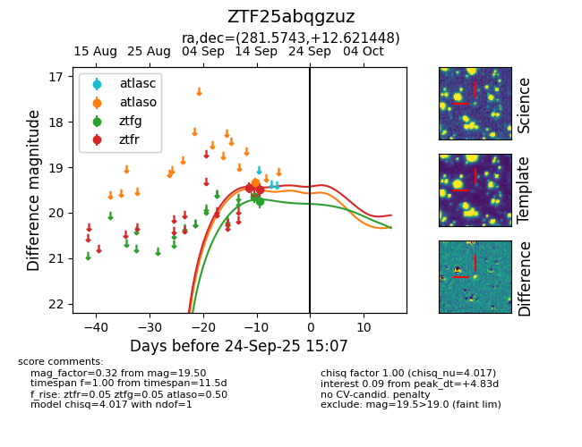
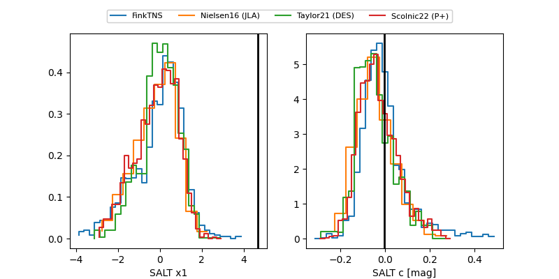

FINK: ZTF25abqgzuz
Lasair: ZTF25abqgzuz
ALeRCE: ZTF25abqgzuz
ZTF25abqgzuz (ztf,fink)
equatorial (ra, dec) = (281.5743,+12.62145)
galactic (l, b) = (43.6405,+6.84101)


last atlaso=19.33, ztfg=19.74, ztfr=19.50
1 atlaso, 2 ztfg, 2 ztfr detections